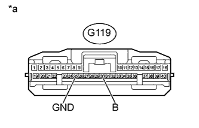
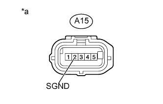
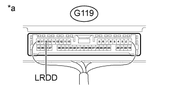

DTC U0235 Нарушение связи с передним датчиком дистанции системы круиз-контроля |
| Код DTC | Условие обнаружения DTC | Неисправный участок |
| U0235 | При нахождении замка зажигания в положении ON (ВКЛ) в течение 1 с регистрируется ошибка обмена данными между датчиком радара миллиметрового диапазона и ЭБУ помощи при движении. |
|
| 1.ПРОВЕРЬТЕ ЖГУТ ПРОВОДОВ И РАЗЪЕМ (ЭБУ ПОМОЩИ ПРИ ДВИЖЕНИИ – АККУМУЛЯТОРНАЯ БАТАРЕЯ И МАССА) |
|  |
Отсоедините разъем G119 ЭБУ.
Измерьте напряжение в соответствии со значениями, приведенными в таблице.
| Контакты для подключения диагностического прибора | Положение переключателя | Заданные условия |
| G119-30 (B) - масса | Зажигание включено | 11–14 В |
| Зажигание выключено | Менее 1 В |
Измерьте сопротивление в соответствии со значениями, приведенными в таблице ниже.
| Контакты для подключения диагностического прибора | Состояние | Заданные условия |
| G119-25 (GND) - масса | Всегда | Менее 1 Ом |
| *a | Вид спереди разъема со стороны жгута проводов: (к ЭБУ помощи при движении) |
|
| ||||
| OK | |
| 2.ПРОВЕРЬТЕ ЖГУТ ПРОВОДОВ И РАЗЪЕМ (ДАТЧИК РАДАРА МИЛЛИМЕТРОВОГО ДИАПАЗОНА – МАССА) |
|  |
Отсоедините разъем A15 датчика.
Измерьте сопротивление в соответствии со значениями, приведенными в таблице ниже.
| Контакты для подключения диагностического прибора | Состояние | Заданные условия |
| A15-2 (SGND) - масса | Всегда | Менее 1 Ом |
| *a | Вид спереди разъема со стороны жгута проводов: (к датчику радара миллиметрового диапазона в сборе) |
|
| ||||
| OK | |
| 3.ПРОВЕРЬТЕ ЖГУТ И РАЗЪЕМ (ЭБУ ПОМОЩИ ПРИ ДВИЖЕНИИ - ДАТЧИК РАДАРА МИЛЛИМЕТРОВОГО ДИАПАЗОНА) |
Отсоедините разъем G119 ЭБУ.
Отсоедините разъем A15 датчика.
Измерьте сопротивление в соответствии со значениями, приведенными в таблице ниже.
| Контакты для подключения диагностического прибора | Состояние | Заданные условия |
| G119-16 (LRDD) - A15-3 (LRDD) | Всегда | Менее 1 Ом |
| G119-16 (LRDD) - масса | Всегда | 10 кОм или более |
|
| ||||
| OK | |
| 4.ПРОВЕРЬТЕ ЭБУ ПОМОЩИ ПРИ ДВИЖЕНИИ |
|  |
Отсоедините разъем A15 датчика.
Измерьте напряжение в соответствии со значениями, приведенными в таблице.
| Контакты для подключения диагностического прибора | Положение переключателя | Заданные условия |
| G119-16 (LRDD) - масса | Зажигание включено | 4,5 - 5,5 В |
| *a | Устройство с неподсоединенным жгутом проводов (ЭБУ помощи при движении) |
|
| ||||
| OK | |
| 5.ЗАМЕНИТЕ ДАТЧИК РАДАРА МИЛЛИМЕТРОВОГО ДИАПАЗОНА В СБОРЕ |
Замените датчик радара миллиметрового диапазона в сборе (Нажмите здесь).
| ДАЛЕЕ | |
| 6.ОТРЕГУЛИРУЙТЕ ДАТЧИК РАДАРА МИЛЛИМЕТРОВОГО ДИАПАЗОНА В СБОРЕ |
Отрегулируйте датчик радара миллиметрового диапазона в сборе (Нажмите здесь).
| ДАЛЕЕ | |
| 7.ПРОВЕРЬТЕ DTC |
Удалите коды DTC (Нажмите здесь).
Проверьте коды DTC (Нажмите здесь).
|
| ||||
| OK | ||
| ||